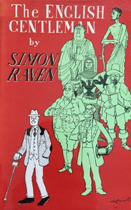
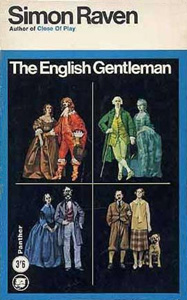
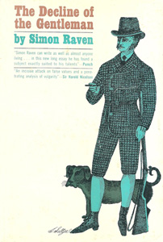

The English Gentleman
(also published as The Decline of the Gentleman)



"Mr. Simon Raven has interrupted the sparkling flow of his novels in order to write a study in social history. It examines the decline of those standards which, from the days of Erasmus, produced our national phenomenon. From time to time he introduces little cautionary tales to illustrate his meaning. It is a good-tempered, amusing and compassionate book. Mr. Raven has few prejudices other than a dislike of the ide rich, regimental officers who marry young, and fashionable summer resorts. He is an agreeable companion with whom to deplore the disappearance of a very excellent type ..." (Sir Harold Nicholson)
In a sense this book is a lament for the passing of the gentleman ideal. But it is more than that. It is an incisive attack on false values and a penetrating analysis of vulgarity. It is a manual of good manners and amusing to read.